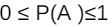
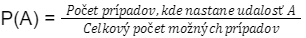
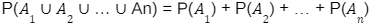
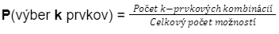

Pravdepodobnosť
Definícia
Pravdepodobnosť je odvetvie matematiky, ktoré sa zaoberá kvantifikáciou možnosti, že daný jav alebo udalosť nastane. Pravdepodobnosť je číslo medzi 0 a 1, pričom 0 znamená nemožnosť a 1 znamená istotu.
Od jednoduchých klasických pravdepodobností po pokročilé metódy, pravdepodobnosť nám pomáha kvantifikovať náš odhad o tom, ako pravdepodobné sú rôzne udalosti.
Základné Pojmy
Pravdepodobnostný priestor
Pravdepodobnostný priestor S je množina všetkých možných výsledkov alebo elementov udalosti. Príkladom môže byť hodenie kocky, kde pravdepodobnostným priestorom sú všetky možné výsledky {1, 2, 3, 4, 5, 6}.
Udalosť
Udalosť A je množina výsledkov v pravdepodobnostnom priestore. Napríklad, ak sa hodí kockou, udalosť A môže byť "získať párne číslo" s možnými výsledkami {2, 4, 6}.
Pravdepodobnosť udalosti
Pravdepodobnosť udalosti A, označovaná ako P(A), je číslo medzi 0 a 1, ktoré udáva mieru istoty alebo možnosti, že udalosť A nastane.
Výpočet pravdepodobnosti
Klasická pravdepodobnosť
Klasická pravdepodobnosť sa používa v situáciách, kde všetky možné výsledky sú rovnomerne pravdepodobné. Pravdepodobnosť udalosti A sa vypočíta ako pomer počtu prípadov, kde A nastane, k celkovému počtu možných prípadov.
Axiómy pravdepodobnosti
- Pravdepodobnosť ľubovoľnej udalosti je nezáporné číslo: P(A) ≥ 0
- Pravdepodobnosť celého pravdepodobnostného priestoru je jednotková: P(S) = 1
- Ak sú udalosti A1, A2, …, An navzájom disjunktné (neinteragujú), potom pravdepodobnosť ich zjednotenia je rovná súčtu ich pravdepodobností: 
Kombinácia s pravdepodobnosťou
Pri riešení problémov s pravdepodobnosťou sa často využíva kombinatorika. Ak máme n možných výsledkov a chceme z nich vybrať k možností, pravdepodobnosť výberu k-členného podielu možností môže byť vyjadrená ako pomer počtu k-prvkových kombinácií k celkovému počtu možností.
